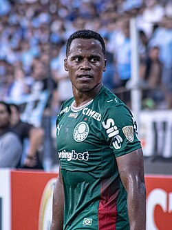

Jhon Arias
Jhon Arias é um futebolista colombiano que atua como meio-campista ou ponta no Palmeiras.
Carlos Vinicius
Carlos Vinícius é um futebolista brasileiro que atua como centroavante no Grêmio.
Léo Jardim
Léo Jardim é um futebolista brasileiro que atua como goleiro no Vasco da Gama.
Matheus Pereira , Cruzeiro.
Matheus Pereira é um futebolista brasileiro que atua como meio-campista pelo Cruzeiro.
Lucho Acosta , Fluminense.
Luciano Acosta mais conhecido como Lucho Acosta é um futebolista argentino que joga como meia-atacante. Atualmente defende o Fluminense
Neymar , Santos.
Neymar Júnior é um futebolista brasileiro que atua como meia-atacante no Santos.